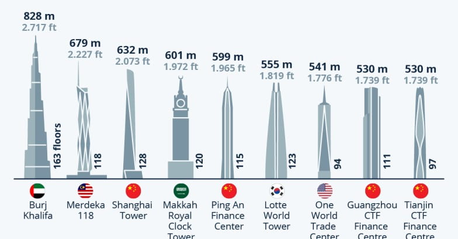
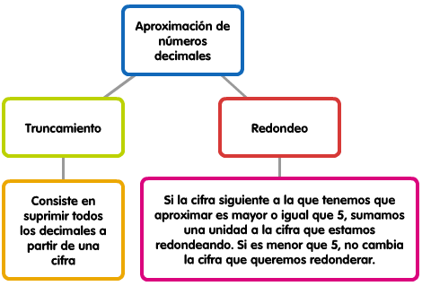

Si lo piensas bien, existen muchas situaciones en nuestra vida cotidiana donde utilizamos los números de manera aproximada.
Lo hacemos normalmente por dos motivos:
- Porque es conveniente o no es necesario dar una cantidad exacta que sí conocemos.
- O porque no tenemos forma de medir esa cantidad con exactitud.
Cuando vamos a comprar frutas o verduras y pedimos un kilo o tres cuartos de algún producto, si nos fijamos bien en la cantidad que marca la balanza, casi nunca el frutero coloca la cantidad exacta de la mercancía que hemos solicitado. "Pasa un poco del kilo", nos dice el comerciante; o "le faltan 35 gramos para los tres cuartos".
Aproximación
Si en un número decimal, a partir de un determinado orden, sustituimos todas las cifras de orden inferior por ceros, obtendremos otro número decimal que se dice una aproximación del primero (hasta el orden fijado).
En la siguiente imagen se comparan los edificios más altos del mundo.
Te planteamos la siguiente reflexión, ¿crees que todos estos edificios miden exactamente los valores recogidos aquí? ¿No variará ni un centímetro? ¿Tendría sentido recoger en esta infografía los posibles decimales? La respuesta probablemente sea no, ya que las diferencias entre unos y otros son de metros.

Esto puede llevarnos a otro planteamiento... ¿existe un orden de aproximación establecido de antemano para hacer una aproximación? La respuesta es NO. Dependerá de lo que se desea medir. Así, carecería de sentido fijar el mismo orden de aproximación para medir la distancia entre dos ciudades o el diámetro de una pelota de tenis de mesa.
En el día a día no es necesaria mucha precisión, basta con 2 ó 3 decimales. Eso sí, la cosa cambia si manejamos datos científicos.
Cifras significativas.
| Se llaman cifras significativas a aquellas con las que se expresa un número aproximado. |
Solo debemos utilizar aquellas cuya exactitud nos conste.
Tipos de aproximaciones.
Cuando realizamos una aproximación podemos hacerla por exceso o por defecto. Estos conceptos están más asimilados en nuestra vida cotidiana de lo que parece. Por ejemplo, la duración del año solar medio no contiene un número exacto de días, por lo que se hacen aproximaciones a la unidad, usando dos tipos de años: el de 365 días (aproximación por defecto) y el de 366 (año bisiesto, aproximación por exceso).
Hay distintos métodos de aproximación:

Practica.
Completa
Completa la siguiente tabla:
Recuerda los conceptos de redondeo y truncamiento.
Ejemplo guiado: Cómo aproximar raíces que no son exactas
Ejercicios
Haz clic en cada tarjeta para darle la vuelta y ver el razonamiento paso a paso: